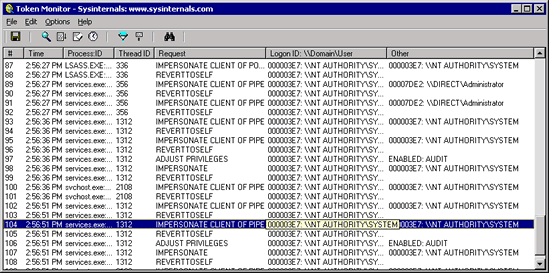

Tokenmon is a application that monitors and displays a variety of security-related activity taking place on a system. Tokenmon gets its name from the fact that Windows NT/2000 stores a process' security information, including the user account context in which the process executes, in an object called a token. Tokenmon monitors includes the following:
Tokenmon has advanced filtering and search capabilities that make it a powerful tool for exploring the way NT works, seeing how applications use security functions, or tracking down problems in system or application configurations.
Tokenmon works on NT 4.0 and Windows 2000.
Simply run the Tokenmon GUI (Tokenmon.exe). Note that you must have administrative privilege to run Tokenmon. Menus, hot-keys, or toolbar buttons can be used to clear the window, save the monitored data to a file, and to filter and search output.
When a thread impersonates you'll see the thread's primary identity in the domain\user column and the identity its adopting in the Other column. Any security actions it performs at that point are in the impersonation context. When it reverts back to its own identity the thread's primary identity is again shown in the domain\user column.
As events are printed to the output, they are tagged with a sequence number. If Tokenmon's internal buffers are overflowed during extremely heavy activity, this will be reflected with gaps in the sequence number.
Each time you exit Tokenmon it remembers the position of the window and the widths of the output columns.
Tokenmon intercepts logon by hooking the NtCreateToken native API. The local security authority uses this API to create an initial login token when a user logs in either remotely or locally. When a user logs on the Local Security Authority Subsystem (LSASS) assigns the logon session a locally unique identifer (LUID) called a logon ID. To see a corresponding logoff, Tokenmon registers with the Security Reference Monitor (SRM) using the SeRegisterLogonSessionTerminatedRoutine kernel function, which requests that the SRM call the driver back whenever a user is logged off.
In order to see a process enable and disable privileges, Tokenmon hooks the NtAdjustPrivilegesToken function, which is the native API-equivalent of the Win32 AdjustTokenPrivileges functions. This function takes an array of privileges with a flag for each indicating whether the process wants to enable or disable it. Tokenmon shows the action for each privilege affected by a single call in separate output lines.
Tokenmon uses the PsSetCreateProcessNotifyRoutine kernel function, which is documented in the Windows 2000 DDK (but available on NT 4), to register a callback function whenever a process starts or exits.
Finally, there are several functions that applications can use to impersonate another user. Tokenmon hooks NtSetInformationThread, a variant of which is the native API-equivalent of the ImpersonateLoggedOnUser and ImpersonateSelf Win32 APIs, the FSCTL_PIPE_IMPERSONATE variant of NtFsControlFile (the native-equivalent of ImpersonateNamedPipeClient), and NtImpersonateClientOfPort, which is called by applications using the Local Procedure Call (LPC) facility and local RPC for impersonating the remote end of a LPC connection.
Tokenmon relies on several undocumented SRM functions to obtain a logon ID from a thread's primary and impersonation tokens, and GetSecurityUserInfo, an undocumented function exported by the KSecDD (Kernel Security-support driver) that retrieves a logon session user's name, domain name, and logon server given a logon ID. Another interesting implementation detail is that several of the native API functions that Tokenmon hooks are not exported by ntoskrnl.exe for use by drivers. Thus, the Tokenmon GUI must reach into NTDLL.DLL, extract their system call numbers, and pass them to the driver. This contrasts with Regmon, which reaches into ntoskrnl.exe using Registry function exports to obtain system call numbers.
See Inside Windows 2000, 3rd Edition by David Solomon and Mark Russinovich (Microsoft Press) for more information on the Windows NT/2000 security subsystem.
Here are some other monitoring tools available at Sysinternals:
Download Tokenmon (60 KB)
Download Tokenmon plus Source (190 KB)